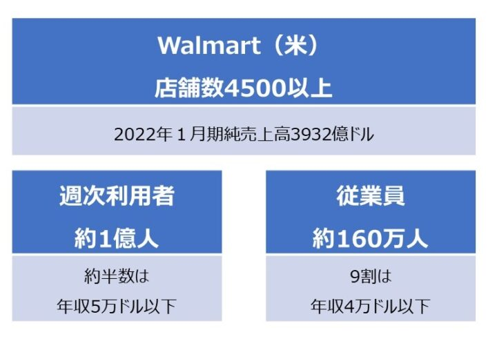
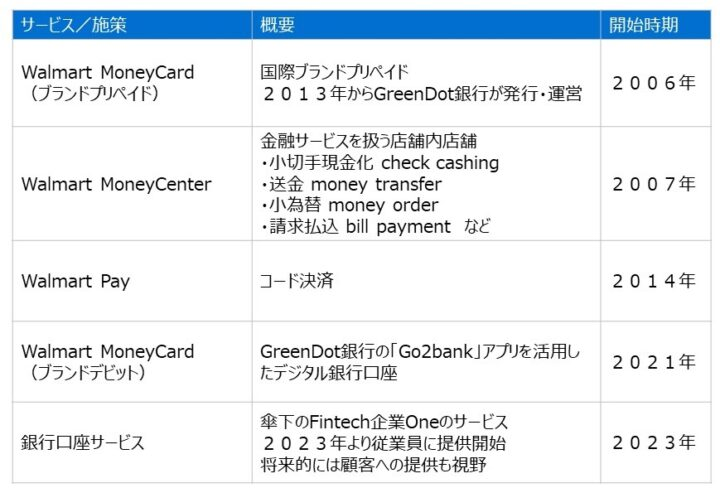

前回記事「『ウォルマート銀行口座』の背景にある、米国銀行口座事情」では米国の銀行口座事情を概観した。今回はいよいよ、ウォルマートの金融への取り組みに迫る。来店促進施策としての金融サービス提供に始まり、顧客と従業員の生活により深く入り込むための低価格銀行口座提供へと発展してきた。
低価格銀行口座はウォルマートに事業的成功をもたらし、銀行口座の競争環境を変革させ、金融包摂を進めることができるのか。背景と経緯を考察し、展望を述べる。
この記事は『CardWave』345号(2023年1・2月号)に掲載された「『ウォルマート銀行口座』のインパクト 低価格口座は米銀行事情をどう変えるか」を抜粋し加筆修正したものです。
ウォルマートとunbanked層
米国の銀行口座事情は、ウォルマートの事業戦略にも大きな影響を及ぼしている。ウォルマートが追求してきた低価格戦略は、必然的に米国の非富裕層にもっとも強く訴求するもので、顧客には比較的低年収な人が多く含まれることになるからだ。

図１ ウォルマートの顧客と従業員の経済状況
図１にウォルマートの顧客と従業員の経済状況をまとめている。世界20カ国以上に展開するグローバル小売であるウォルマートだが、ホームグラウンドである米国市場ではまさに圧倒的な存在感を誇っている。米国市場における店舗数は4,500以上、2022年1月期の純売上高（net sales）は3,932億ドル、これは日本円で50兆円を超える規模だ。
米国内で1週間のうちにウォルマート店舗を利用する人は約1億人、米国の消費者の約4割に相当する。
そしてウォルマートの週次利用者の約半数は年収5万ドル以下。米国の物価水準においては、暮らしに余裕があるとはいえないだろう。
ウォルマートは雇用主としての規模も大きい。米国における従業員は160万人。そしてその9割は年収4万ドル以下だ。
利用者数・従業員数とも巨大なウォルマートだが、両者とも年収レベルは高いとはいえない。ウォルマート利用者や従業員にはunbanked/underbanked層が多く含まれているのだ。
金融サービスで来店促進
ウォルマートにとって、金融サービスは収益源ではない。
現在も決済・送金・後払い・分割払い・融資などさまざまな金融サービスを提供しているが、その収益規模は業績にインパクトを与えるほどでは全くない。
それでもウォルマートが金融サービスに取り組んできた理由は、その来店促進効果にある。
unbanked/underbanked層を多く含む自社顧客は、銀行で満たすことができない金融ニーズを抱えている。顧客のニーズに合った金融サービスを提供することで、ウォルマートは顧客の来店動機の強化を狙っているのだ。

表１ ウォルマートの金融サービスへの取り組み（一部）
そしてウォルマートの最初の金融サービスが、2006年のブランドプリペイド「Walmart MoneyCard」発行であったことも示唆的だ。unbanked/underbanked層向けの決済口座的なサービスなのだ。当初はGE系列の銀行が提携イシュアだった
が2013年からはBaaS/Embedded Financeで有名なモバイル銀行であるグリーンドット（Green Dot）が発行と運営を担うようになっている。
そして2007年からは、金融サービスを扱う店舗内店舗「MoneyCenter」の開設を開始。小切手現金化（check cashing）・送金（money transfer）・小為替（money order）・請求払込（bill payment）など、日常生活で生じる金融ニーズに対応したサービスを展開してきている。
unbanked/underbanked層にとってウォルマート店舗の魅力がさらに増すよう計算されているのだ。
2014年に開始した独自のQRコード決済「Walmart Pay」は日本でもよく知られている。2015年には月間アクティブユーザー2,000万人に達した巨大決済サービスで、米PYMTS.comの2022年調査でも米国モバイルウォレットユーザーの10%が利用している。ウォルマートでしか利用できないハウス型という制約を考慮するとこれはかなりの利用率だ。レジでの支払いを終えてすぐにキャッシュバックが送られてくる機能や、近隣店舗の広告にある値段にマッチするよう自動で値引きが適用
される機能もウォルマートの継続利用を促進する。
Walmart Payに関する過去記事はこちら：
- インフキュリオン・インサイト、「米国Walmart Payと店舗内の消費者導線」、２０１６年５月２７日
- インフキュリオン・インサイト、「Walmart Payと米国ウォルマートのアプリ戦略」、２０１５年１２月１４日
低価格口座を自ら提供
ここまで紹介したウォルマートの金融サービスは決済の円滑化による購買体験の向上、そして日常的な金融ニーズに対応したサービスを店舗内で提供することで来店頻度向上を狙ったものと理解することができる。
「低価格銀行口座」という新たな路線が顕在化したのは2021年だった。100万人以上が利用していた「Walmart MoneyCard」の口座を、プリペイドから正規の銀行口座に移行させたのだ。イシュアはグリーンドット銀行のままなのだが、移行前はさまざまな制約のあるプリペイド口座だったものが、移行後は完全な銀行口座、しかもグリーンドットの「Go2bank」アプリを活用したデジタル口座となった。
MoneyCard口座は銀行口座ではあるが、従来銀行の口座とは価格設定の面が大きく異なっている。前月に500ドル以上の入金があれば口座維持手数料は無料、そしてオーバードラフトはユーザーのオプトインがなければ適用されず、もしオーバードラフトしても24時間以内に残高をゼロ以上に戻せば手数料は課せられない。
これまでunbanked /underbankedだった層にも利用しやすいよう設計されているのだ。
ウォルマートの金融サービスは、ウォルマートPayを除き、基本的にパートナー金融業者のサービスを自社チャネルで提供するという形態だった。例えば「MoneyCard」はグリーンドットの標準的なサービスをウォルマートブランドで提供しているに過ぎない。
2023年からのchecking accountの提供はこの点で大きな方向転換となっている。自らが過半を出資して設立した新興Fintech企業Oneの銀行口座サービスを自社従業員に提供し、将来的には顧客への提供も視野に入れているのだ。
Oneのように、店舗を持たずアプリで銀行口座を提供するネオバンクは米国にも多く存在しており、若年層やアーリーアダプター層などを中心にユーザー獲得しているものもある。しかしunbanked / underbanked層をユーザー層に取り込み事業的な成功を収めたものはまだ出てきていない。Fintechが金融包摂を大きく進めたとはまだ言えないのだ。
米国の中央銀行のメンバーであるカンザスシティ連邦準備銀行がウォルマートの銀行口座サービスに期待する理由はここにある。巨大な店舗網と顧客基盤を持ち、unbanked /underbanked層に寄り添う存在ともいえるウォルマートならば、銀行口座を広く普及させ金融包摂を進めることができるかもしれないのだ。
ウォルマートの参入自体が銀行口座間の競争を促進し、手数料水準を押し下げるという期待もある。
低価格銀行口座はウォルマートに事業的成功をもたらし、銀行口座の競争環境を変革させ、金融包摂を進めることができるのか。その答えは数年後には明らかになることだろう。
参考情報：
- インフキュリオン・インサイト、「「ウォルマート銀行口座」の背景にある、米国銀行口座事情」、２０２３年６月５日
- PYMNTS.com、「Mobile Wallet Adoption: Apple Pay @8: Still The Big Fish In A Small Mobile Wallets Pond」、２０２２年
- カンザスシティ連邦準備銀行、「Walmart Checking and Apple Savings: Different Motivations, Similar Outcomes?」、2022年11月30日


{kind=link}
{kind=link}
{kind=link}